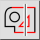
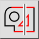
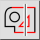
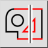

Выделить объекты секущей или снять выделение
Панель инструментов / Иконка:
 

Меню: Выделение > Выделить объекты секущей или снять выделение
Горячая клавиша: T, X
Команды: selectintersected | tx | ux
Это автоматический перевод.
Панель инструментов / Иконка:
 

Меню: Выделение > Выделить объекты секущей или снять выделение
Горячая клавиша: T, X
Команды: selectintersected | tx | ux
Selects or deselects all entities that are intersected by a line.